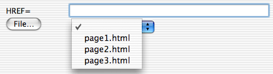
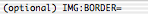

You can specify the target window in two ways:
- type the window name in the text box,
- choose a window name from the menu with your window cache.
Note! If you type something in the text box, it will be used, even if you choose a window from the menu.
This page explains how you can give attributes to an HTML elements when you insert a new one using one of the menu items for an HTML element, or when you change an existing tag either using in the submenu of the HTML Utilities menu or command-double-click a tag. For other features which helps you modify an existing tag, see Contextual menu, Option-click in titlebar, Word completion, and in the menu.
When you insert a new HTML element using one of the menu items you can be asked about the element's attributes in two different ways: either in a dialog box with all attributes (the default), or in the status bar. In the general preferences dialog you can select which of these two ways you want to use. You can use different settings for when you give attributes to and insert a new tag and when you want to change an existing one.
Different attributes can take different types of values, URLs, colors, integers, for example. Below we will go through how to specify the attribute value for the different kinds of attributes.

You can specify the URL in three ways:
Note! If you type a URL in the text box, it will be used even if you choose something from the menu.
It is probably much faster to type the URL than selecting a file from a file dialog, but the advantage of using the file dialog is that it will automatically insert a correct absolute or relative URL depending on which is appropriate. If you use a BASE tag in the current window it will be noticed.
Alpha calculates the URL as follows. Files inside home page folders are mapped to a URL http://as.you.have.defined.it/file.html and files outside the home page folders are mapped to a URL file:///path/to/file.html
Alpha first determines the URL of the two files, and then determines the URL to link between them.
You can also make links between files which are not in a home page folder, but linking between files, where one is inside a home page folder and the other one is not, may not always make sense.
If you select a GIF, JPEG, or PNG file for the attribute SRC of IMG via a file dialog, the attributes WIDTH and HEIGHT are automatically determined.
You can specify the color in three ways:
Note! If you type something in the text box, it will be used, even if you choose a color from the menu.
The menu contains first your own colors and then the 16 predefined colors in HTML. See the section Color sets about how to define your own colors and how to group them into sets.
You can specify the target window in two ways:
Note! If you type something in the text box, it will be used, even if you choose a window from the menu.
You can specify the content type in two ways:
Note! If you type something in the text box, it will be used, even if you choose something from the menu.
These are attributes which takes a list of values. Media descriptors and content types should be a comma separated list, while the link types should be space separated. You can either type the value you want directly into the text box, or select values from the menu. Clicking the Add button will add the selected item to the text box. Note! If there is something selected in the menu when you leave the dialog, it will automatically be added to the attribute value. Thus if you only need one value, it is enough to select it in the menu without having to click Add.
The values in the menu can be edited by using the functions , , and in the menu.
Attributes which take a value from a predefined list of choices. Select a value from the menu.
Attributes which take an numerical value. The number will be checked that it is in the valid range and that it is of the right type, e.g. if a percentage value is allowed.
These are attributes which does not take any value. Check the checkbox to use it.
These are attributes which takes a date and time of ISO format as its value. Either specify the value or check Current time to have Alpha insert the value of the current time.
If an element has very many attributes, the dialog box may have to be divided into two, or possibly three, pages to fit your screen. Then there will be a menu in the upper left corner of the dialog box to switch between the pages. The dialog box is made as large as possible before being split into two or three pages.
Alpha will complain if you forget a required attribute, and in most cases it will complain if you give a value to an attribute which is not valid.
When you use the status bar, Alpha will go through the attributes and ask you to type a value for each of them in the status bar. It you do not want to give a value to an attribute, simply type return and the attribute is skipped. You can customize which attributes to be asked about, see the next page.
By default, Alpha beeps for the first attribute it asks you about in order to attract your attention. You can turn off the beep in the general preferences dialog.
For each attribute you will get a prompt in the status bar. When an attribute is optional, "(optional)" is added to the prompt. When you are editing an already existing tag, the current value will be given as a default within brackets. This value will be used if you do not specify a new value.


You can simply type the value you want for an attribute, but some keys have special functions to speed up your work.
tab - If you type tab Alpha will look at what you have typed so far and match it against the possible options and attempt to complete it as much as possible. If Alpha cannot complete anything it will beep. Let us illustrate this with an example. If you are asked about the value for the attribute ALIGN of the P element, the possible values are LEFT, CENTER, RIGHT, and JUSTIFY. If you now type C and then tab, Alpha will complete this for you by adding ENTER giving the value CENTER.
Tab can be used for the following types of attributes:
double tab - As just explained, when you type tab Alpha will try to complete what you have typed as much as possible. Sometimes there are several possible options and Alpha can only complete partially. Then if you immediately type a second tab Alpha will open a window with a list of everything that match what you have typed so far. If you choose something from the list, Alpha will use that value and immediately jump to ask you about the next attribute.
ctrl-f - Ctrl-f can be used for attributes of the types URL and Color. If you are asked for a URL, typing ctrl-f will let you select a file from a file dialog. If you are asked for a color, typing ctrl-f will let you define a new color from a color picker. Once you have selected a file or defined a new color, Alpha immediately jumps to ask you about the next attribute.
If you select a GIF, JPEG, or PNG file for the attribute SRC of IMG via a file dialog, the attributes WIDTH and HEIGHT are automatically determined. Just hit return for the WIDTH and HEIGHT attributes and the automatically determined values will be used.
cmd-v - Pastes the clipboard into the status bar.
ctrl-q - Skips the current and subsequent attributes. This saves you from going through the whole list of attributes.
ctrl-d - Sometimes there is a default value for an attribute. In particular when you are changing an existing tag the current value is given as default. This default value is given within brackets in the prompt:
If you type a new value it will be used and if you just hit return without giving a value, the default one will be used. In this case, if you do not want any value at all and want to remove this attribute, type ctrl-d to skip this attribute.
escape - Deletes everything written.
ctrl-z - Cancel everything.
When you are asked about a Color attribute, you can either type a color value #123456 or the name of one of your colors.
When you are asked about a Date and time attribute you can type "now" to make Alpha use the current time as the value.